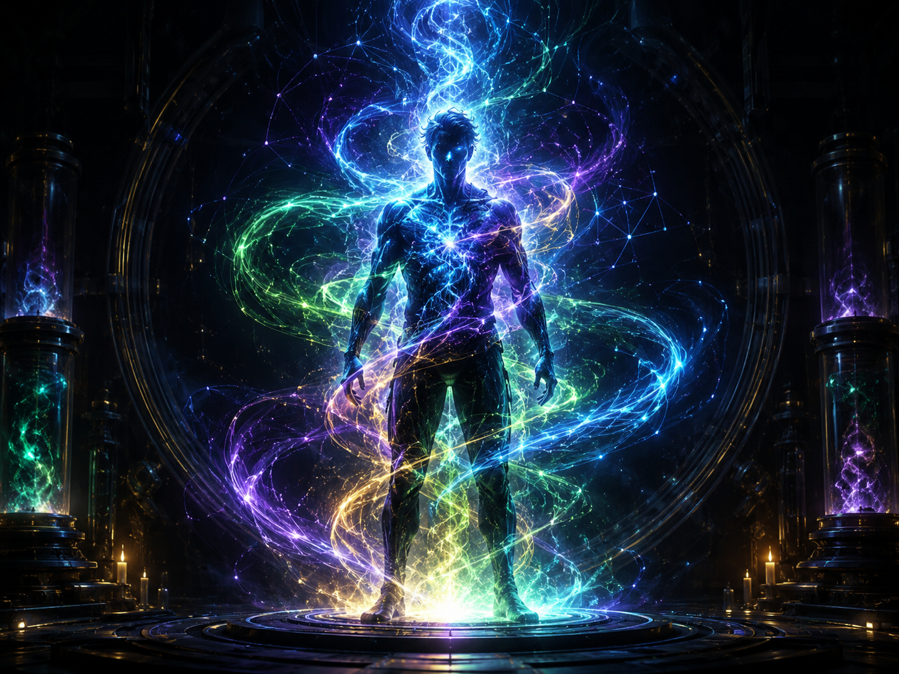

PROJECT N · STANDER TYPE ANALYSIS
스탠더 타입 분석실
대기 중

스탠더의 선택은 늘 기록되고 있습니다.
총 15개의 상황 질문을 통해 전투 반응, 성장 방식, 결사 태도, 확률 대응 성향을 분석합니다.
결과는 연구소식 분류이며, 실제 플레이 실력이나 계정 상태와는 무관합니다.
F/S · 전투 반응
P/R · 성장 방식
C/L · 결사 태도
G/A · 확률 대응
ANALYSIS COMPLETE
FRCA
결사형 전략 스탠더
전투 반응F
성장 방식R
결사 태도C
확률 대응A
추천 연구 ·
주의 문구 ·
결과 이미지는 브라우저에서 직접 생성됩니다. 일부 환경에서는 글꼴이 다르게 보일 수 있습니다.